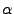

| Biopython チュートリアル & クックブック |
| Biopython チュートリアル & クックブック |
Atom は原子に関連するデータを記憶し，子エンティティを持ちません．
原子の id はその原子の名前になります (例えば，"OG" は Ser 残基の
側鎖の酸素です)．ある残基中では，個々の原子の id は一意でなければ
なりません．3.11.2 節でも述べたように，データを構文解析
する際に原子のゆらぎに遭遇すると例外が発生します．
PDB ファイル中では，原子の名前は 4 文字のキャラクタからなり，通常は
先頭と末尾に空白がついています．PDB ファイルでは，簡単のために
しばしばこの空白は除去されます (例えば，アミノ酸C は
PDB ファイル中では ".CA." で，ドットが空白を表します)．
ある残基内で名前の衝突 (同じ名前と id を持つ Atom オブジェクト
が生成される) が起こらない限り，原子の名前を生成する際にスペースを
除去します．衝突が発生する場合，パーザはスペースを含めた原子名を使おうと
試みます．このような状況は，例えば一つの残基に ".CA." と
"CA.." という名前の原子が入っている場合に発生しますが，
めったに起きることはありません．
残基に保存されている原子のデータには，原子の名前，原子の座標 (もしあれば標準偏差も)，B ファクタ (もしあれば異方性 B ファクタと 標準偏差も)， altloc 指定子と空白を含む完全な原子名が入っています． 原子番号 (element number) や原子の電荷といった，あまり利用されない 要素は， PDB ファイル中には書かれていますがAtom のデータと しては保存されません
Atom オブジェクトには以下のようなメソッドがあります:
a.get_name() # 原子名 (スペースなし，例えば "CA") a.get_id() # id (原子名と同じ) a.get_coord() # 原子座標 a.get_bfactor() # B ファクタ a.get_occupancy() # 原子ゆらぎにおける占有率 a.get_altloc() # _REPLACE_代替構造記憶位置指定子 (alternative location specifier) a.get_sigatm() # 原子パラメタの標準偏差 a.get_siguij() # 異方性 B ファクタの標準偏差 a.get_anisou() # 異方性 B ファクタ a.get_fullname() # 原子名 (スペースを含む, 例. ".CA.")
原子の座標、異方性 B ファクタおよびその標準偏差， 原子パラメタの標準偏差の表現には Numerical Python の配列が 用いられています．
| Biopython チュートリアル & クックブック |